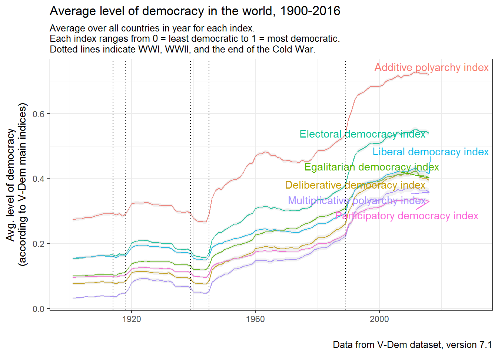
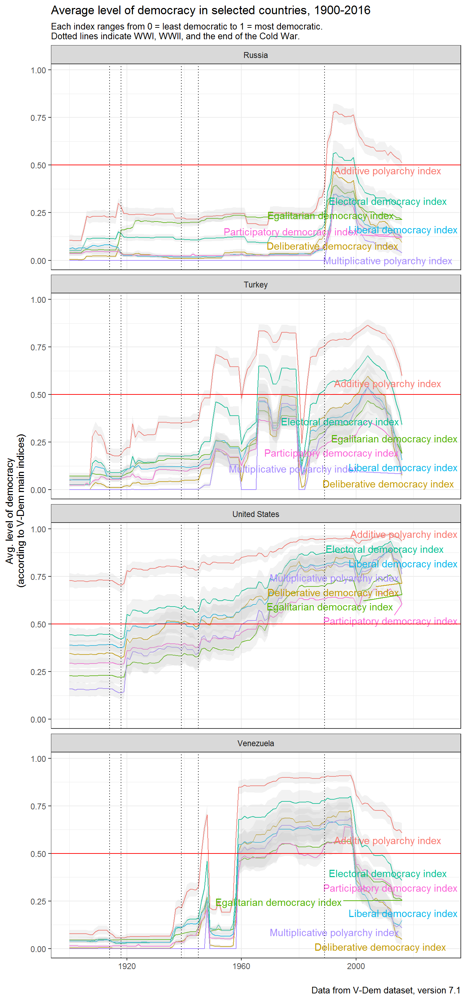

This package provides access to the Varieties of Democracy (V-Dem) dataset, version 7.1. It includes the dataset’s codebook as a data frame, which allows one to easily search for variables by label or other descriptors. And it also includes a couple of convenience functions, extract_vdem and extract_vdem_filter, to extract subsets of the dataset meeting particular criteria.
Installation
This package is only available on Github for now. Install as follows:
devtools::install_github("xmarquez/vdem")
Accessing the VDem dataset
You can access the entire V-Dem dataset by typing VDem_plus. (Access documentation on the dataset by typing ?VDem_plus, or typing vdem_codebook to access the codebook as a data frame.).
Extracting specific variables by label, section number, etc.
The V-Dem dataset is pretty big; including external variables and identifiers, it has 17604 rows and 3615 columns, which takes up a lot of memory and can be confusing to work with. This package thus makes available the function extract_vdem, which allows you to extract a subset of these variables meeting specific criteria. For example, you can just extract the main democracy indices (described in section 1 of the codebook) as follows:
library(vdem)
main_indices <- extract_vdem(section_number = 1)
main_indices
#> # A tibble: 17,604 x 54
#> vdem_country_name vdem_country_id vdem_country_text_id year
#> <chr> <dbl> <chr> <dbl>
#> 1 Afghanistan 36 AFG 1900
#> 2 Afghanistan 36 AFG 1901
#> 3 Afghanistan 36 AFG 1902
#> 4 Afghanistan 36 AFG 1903
#> 5 Afghanistan 36 AFG 1904
#> 6 Afghanistan 36 AFG 1905
#> 7 Afghanistan 36 AFG 1906
#> 8 Afghanistan 36 AFG 1907
#> 9 Afghanistan 36 AFG 1908
#> 10 Afghanistan 36 AFG 1909
#> # ... with 17,594 more rows, and 50 more variables:
#> # extended_country_name <chr>, GWn <dbl>, historical_date <date>,
#> # codingstart <date>, gapstart <date>, gapend <date>, codingend <date>,
#> # vdem_cown <dbl>, v2x_polyarchy <dbl>, v2x_api <dbl>, v2x_mpi <dbl>,
#> # v2x_libdem <dbl>, v2x_liberal <dbl>, v2x_partipdem <dbl>,
#> # v2x_partip <dbl>, v2x_delibdem <dbl>, v2xdl_delib <dbl>,
#> # v2x_egaldem <dbl>, v2x_egal <dbl>, v2x_polyarchy_codelow <dbl>,
#> # v2x_api_codelow <dbl>, v2x_mpi_codelow <dbl>,
#> # v2x_libdem_codelow <dbl>, v2x_liberal_codelow <dbl>,
#> # v2x_partipdem_codelow <dbl>, v2x_partip_codelow <dbl>,
#> # v2x_delibdem_codelow <dbl>, v2xdl_delib_codelow <dbl>,
#> # v2x_egaldem_codelow <dbl>, v2x_egal_codelow <dbl>,
#> # v2x_polyarchy_codehigh <dbl>, v2x_api_codehigh <dbl>,
#> # v2x_mpi_codehigh <dbl>, v2x_libdem_codehigh <dbl>,
#> # v2x_liberal_codehigh <dbl>, v2x_partipdem_codehigh <dbl>,
#> # v2x_partip_codehigh <dbl>, v2x_delibdem_codehigh <dbl>,
#> # v2xdl_delib_codehigh <dbl>, v2x_egaldem_codehigh <dbl>,
#> # v2x_egal_codehigh <dbl>, GW_startdate <date>, GW_enddate <date>,
#> # GWc <chr>, extended_region <chr>, extended_continent <chr>,
#> # microstate <lgl>, lat <dbl>, lon <dbl>, in_GW_system <lgl>The function extract_vdem always returns a tibble with all the identifiers in the dataset (country name, id, year, COW code, etc.) plus the requested variables. (You will note that this table includes a couple of identifiers I added, providing information about the membership of the country-year in the Gleditsch-Ward state system membership list). You can also specify whether you want the measures of uncertainty included in the dataset (_codehigh and _codelow confidence interval extremes) returned, or whether certain variable types (e.g., ordinal-scale variables) should be excluded.
It is possible to extract variables whose labels mention certain words. For example, you can extract all the variables that mention “corruption” in the codebook labels:
corruption_vars <- extract_vdem(label_pattern = "corrupt")
corruption_vars
#> # A tibble: 17,604 x 45
#> vdem_country_name vdem_country_id vdem_country_text_id year
#> <chr> <dbl> <chr> <dbl>
#> 1 Afghanistan 36 AFG 1900
#> 2 Afghanistan 36 AFG 1901
#> 3 Afghanistan 36 AFG 1902
#> 4 Afghanistan 36 AFG 1903
#> 5 Afghanistan 36 AFG 1904
#> 6 Afghanistan 36 AFG 1905
#> 7 Afghanistan 36 AFG 1906
#> 8 Afghanistan 36 AFG 1907
#> 9 Afghanistan 36 AFG 1908
#> 10 Afghanistan 36 AFG 1909
#> # ... with 17,594 more rows, and 41 more variables:
#> # extended_country_name <chr>, GWn <dbl>, historical_date <date>,
#> # codingstart <date>, gapstart <date>, gapend <date>, codingend <date>,
#> # vdem_cown <dbl>, v2x_corr <dbl>, v2x_pubcorr <dbl>, v2x_execorr <dbl>,
#> # v2exbribe <dbl>, v2excrptps <dbl>, v2lgcrrpt <dbl>, v2jucorrdc <dbl>,
#> # v2mecorrpt <dbl>, v2x_corr_codelow <dbl>, v2x_pubcorr_codelow <dbl>,
#> # v2x_execorr_codelow <dbl>, v2exbribe_codelow <dbl>,
#> # v2excrptps_codelow <dbl>, v2lgcrrpt_codelow <dbl>,
#> # v2jucorrdc_codelow <dbl>, v2mecorrpt_codelow <dbl>,
#> # v2x_corr_codehigh <dbl>, v2x_pubcorr_codehigh <dbl>,
#> # v2x_execorr_codehigh <dbl>, v2exbribe_codehigh <dbl>,
#> # v2excrptps_codehigh <dbl>, v2lgcrrpt_codehigh <dbl>,
#> # v2jucorrdc_codehigh <dbl>, v2mecorrpt_codehigh <dbl>,
#> # GW_startdate <date>, GW_enddate <date>, GWc <chr>,
#> # extended_region <chr>, extended_continent <chr>, microstate <lgl>,
#> # lat <dbl>, lon <dbl>, in_GW_system <lgl>And here we extract variables that refer to civil society, including “external” ones bundled with the dataset but not produced by the V-Dem project itself:
civil_society <- extract_vdem(name_pattern = "^v2cl", label_pattern = "civil society", include_external = TRUE)
civil_society
#> # A tibble: 17,604 x 143
#> vdem_country_name vdem_country_id vdem_country_text_id year
#> <chr> <dbl> <chr> <dbl>
#> 1 Afghanistan 36 AFG 1900
#> 2 Afghanistan 36 AFG 1901
#> 3 Afghanistan 36 AFG 1902
#> 4 Afghanistan 36 AFG 1903
#> 5 Afghanistan 36 AFG 1904
#> 6 Afghanistan 36 AFG 1905
#> 7 Afghanistan 36 AFG 1906
#> 8 Afghanistan 36 AFG 1907
#> 9 Afghanistan 36 AFG 1908
#> 10 Afghanistan 36 AFG 1909
#> # ... with 17,594 more rows, and 139 more variables:
#> # extended_country_name <chr>, GWn <dbl>, historical_date <date>,
#> # codingstart <date>, gapstart <date>, gapend <date>, codingend <date>,
#> # vdem_cown <dbl>, v2clacfree <dbl>, v2clrelig <dbl>, v2cltort <dbl>,
#> # v2clkill <dbl>, v2cltrnslw <dbl>, v2clrspct <dbl>, v2clfmove <dbl>,
#> # v2cldmovem <dbl>, v2cldmovew <dbl>, v2cldiscm <dbl>, v2cldiscw <dbl>,
#> # v2clslavem <dbl>, v2clslavef <dbl>, v2clstown <dbl>, v2clprptym <dbl>,
#> # v2clprptyw <dbl>, v2clacjstm <dbl>, v2clacjstw <dbl>,
#> # v2clacjust <dbl>, v2clsocgrp <dbl>, v2clrgunev <dbl>,
#> # v2clsnlpct <dbl>, v2clrgstch_0 <dbl>, v2clrgstch_1 <dbl>,
#> # v2clrgstch_10 <dbl>, v2clrgstch_11 <dbl>, v2clrgstch_12 <dbl>,
#> # v2clrgstch_13 <dbl>, v2clrgstch_14 <dbl>, v2clrgstch_15 <dbl>,
#> # v2clrgstch_16 <dbl>, v2clrgstch_17 <dbl>, v2clrgstch_18 <dbl>,
#> # v2clrgstch_19 <dbl>, v2clrgstch_2 <dbl>, v2clrgstch_20 <dbl>,
#> # v2clrgstch_21 <dbl>, v2clrgstch_3 <dbl>, v2clrgstch_4 <dbl>,
#> # v2clrgstch_5 <dbl>, v2clrgstch_6 <dbl>, v2clrgstch_7 <dbl>,
#> # v2clrgstch_8 <dbl>, v2clrgstch_9 <dbl>, v2clrgwkch_0 <dbl>,
#> # v2clrgwkch_1 <dbl>, v2clrgwkch_10 <dbl>, v2clrgwkch_11 <dbl>,
#> # v2clrgwkch_12 <dbl>, v2clrgwkch_13 <dbl>, v2clrgwkch_14 <dbl>,
#> # v2clrgwkch_15 <dbl>, v2clrgwkch_16 <dbl>, v2clrgwkch_17 <dbl>,
#> # v2clrgwkch_18 <dbl>, v2clrgwkch_19 <dbl>, v2clrgwkch_2 <dbl>,
#> # v2clrgwkch_20 <dbl>, v2clrgwkch_21 <dbl>, v2clrgwkch_3 <dbl>,
#> # v2clrgwkch_4 <dbl>, v2clrgwkch_5 <dbl>, v2clrgwkch_6 <dbl>,
#> # v2clrgwkch_7 <dbl>, v2clrgwkch_8 <dbl>, v2clrgwkch_9 <dbl>,
#> # v2clacfree_codelow <dbl>, v2clrelig_codelow <dbl>,
#> # v2cltort_codelow <dbl>, v2clkill_codelow <dbl>,
#> # v2cltrnslw_codelow <dbl>, v2clrspct_codelow <dbl>,
#> # v2clfmove_codelow <dbl>, v2cldmovem_codelow <dbl>,
#> # v2cldmovew_codelow <dbl>, v2cldiscm_codelow <dbl>,
#> # v2cldiscw_codelow <dbl>, v2clslavem_codelow <dbl>,
#> # v2clslavef_codelow <dbl>, v2clstown_codelow <dbl>,
#> # v2clprptym_codelow <dbl>, v2clprptyw_codelow <dbl>,
#> # v2clacjstm_codelow <dbl>, v2clacjstw_codelow <dbl>,
#> # v2clacjust_codelow <dbl>, v2clsocgrp_codelow <dbl>,
#> # v2clrgunev_codelow <dbl>, v2clsnlpct_codelow <dbl>,
#> # v2clacfree_codehigh <dbl>, v2clrelig_codehigh <dbl>,
#> # v2cltort_codehigh <dbl>, v2clkill_codehigh <dbl>, ...You can use any regular expression you like to search over the variable names or label names. See ?extract_vdem for all options.
If you need more control over the variables extracted, or need to learn more about them, you can use the codebook:
vdem_codebook
#> # A tibble: 1,216 x 18
#> section number name label type
#> <int> <chr> <chr> <chr> <chr>
#> 1 1 1.1 v2x_polyarchy Electoral democracy index (D)
#> 2 1 1.2 v2x_api Additive polyarchy index (D)
#> 3 1 1.3 v2x_mpi Multiplicative polyarchy index (D)
#> 4 1 1.4 v2x_libdem Liberal democracy index (D)
#> 5 1 1.5 v2x_liberal Liberal component index (D)
#> 6 1 1.6 v2x_partipdem Participatory democracy index (D)
#> 7 1 1.7 v2x_partip Participatory component index (D)
#> 8 1 1.8 v2x_delibdem Deliberative democracy index (D)
#> 9 1 1.9 v2xdl_delib Deliberative component index (D)
#> 10 1 1.10 v2x_egaldem Egalitarian democracy index (D)
#> # ... with 1,206 more rows, and 13 more variables: project_manager <chr>,
#> # compiler <chr>, question <chr>, clarification <chr>, responses <chr>,
#> # scale <chr>, aggregation <chr>, note <chr>, ordering <chr>,
#> # cross_coder <chr>, source <chr>, data_release <chr>, citation <chr>You can use the function extract_vdem_filter to exercise finer control over the extraction process. For example, here we extract all variables listed in section 1 of the codebook except component indices:
extract_vdem_filter(section == 1, !grepl("component index", label))
#> # A tibble: 17,604 x 42
#> vdem_country_name vdem_country_id vdem_country_text_id year
#> <chr> <dbl> <chr> <dbl>
#> 1 Afghanistan 36 AFG 1900
#> 2 Afghanistan 36 AFG 1901
#> 3 Afghanistan 36 AFG 1902
#> 4 Afghanistan 36 AFG 1903
#> 5 Afghanistan 36 AFG 1904
#> 6 Afghanistan 36 AFG 1905
#> 7 Afghanistan 36 AFG 1906
#> 8 Afghanistan 36 AFG 1907
#> 9 Afghanistan 36 AFG 1908
#> 10 Afghanistan 36 AFG 1909
#> # ... with 17,594 more rows, and 38 more variables:
#> # extended_country_name <chr>, GWn <dbl>, historical_date <date>,
#> # codingstart <date>, gapstart <date>, gapend <date>, codingend <date>,
#> # vdem_cown <dbl>, v2x_polyarchy <dbl>, v2x_api <dbl>, v2x_mpi <dbl>,
#> # v2x_libdem <dbl>, v2x_partipdem <dbl>, v2x_delibdem <dbl>,
#> # v2x_egaldem <dbl>, v2x_polyarchy_codelow <dbl>, v2x_api_codelow <dbl>,
#> # v2x_mpi_codelow <dbl>, v2x_libdem_codelow <dbl>,
#> # v2x_partipdem_codelow <dbl>, v2x_delibdem_codelow <dbl>,
#> # v2x_egaldem_codelow <dbl>, v2x_polyarchy_codehigh <dbl>,
#> # v2x_api_codehigh <dbl>, v2x_mpi_codehigh <dbl>,
#> # v2x_libdem_codehigh <dbl>, v2x_partipdem_codehigh <dbl>,
#> # v2x_delibdem_codehigh <dbl>, v2x_egaldem_codehigh <dbl>,
#> # GW_startdate <date>, GW_enddate <date>, GWc <chr>,
#> # extended_region <chr>, extended_continent <chr>, microstate <lgl>,
#> # lat <dbl>, lon <dbl>, in_GW_system <lgl>And then you can easily use the data for your analyses or to make pretty pictures:
library(tidyverse)
#> Loading tidyverse: ggplot2
#> Loading tidyverse: tibble
#> Loading tidyverse: tidyr
#> Loading tidyverse: readr
#> Loading tidyverse: purrr
#> Loading tidyverse: dplyr
#> Conflicts with tidy packages ----------------------------------------------
#> filter(): dplyr, stats
#> lag(): dplyr, stats
data <- extract_vdem_filter(section == 1, !grepl("component index", label),
include_uncertainty = FALSE) %>%
gather(index, index_value, v2x_polyarchy:v2x_egaldem) %>%
select(vdem_country_name, vdem_country_id, year, index, index_value) %>%
left_join(extract_vdem_filter(section == 1, !grepl("component index", label),
include_uncertainty = FALSE, include_sd = TRUE) %>%
gather(sd, sd_value, v2x_polyarchy_sd:v2x_egaldem_sd) %>%
select(-v2x_polyarchy:-v2x_egaldem) %>%
select(vdem_country_name, vdem_country_id, year, sd, sd_value)) %>%
filter(index == stringr::str_replace(sd, "_sd","")) %>%
left_join(vdem_codebook %>%
select(name, label) %>%
rename(index = name)) %>%
filter(!is.na(index)) %>%
group_by(year, index) %>%
summarise(mean_index = mean(index_value, na.rm=TRUE),
se = sqrt(sum(sd_value^2, na.rm = TRUE))/n(),
pct_025 = mean_index - 1.96*se,
pct_975 = mean_index + 1.96*se,
label = unique(label))
#> Warning: attributes are not identical across measure variables;
#> they will be dropped
#> Warning: attributes are not identical across measure variables;
#> they will be dropped
#> Joining, by = c("vdem_country_name", "vdem_country_id", "year")
#> Joining, by = "index"
library(ggrepel)
ggplot(data %>% filter(year > 1900)) +
geom_line(aes(x = year, y = mean_index, color = label), show.legend = FALSE) +
geom_ribbon(aes(x = year, ymin = pct_025, ymax = pct_975, group = label),
fill = "grey", alpha = 0.2) +
geom_text_repel(data = data %>%
filter(year == 2016),
aes(x = year, y = mean_index, label = label, color = label), show.legend = FALSE) +
theme_bw() +
labs(y = "Avg. level of democracy\n(according to V-Dem main indices)",
color = "", x = "",
title = "Average level of democracy in the world, 1900-2016",
subtitle = "Average over all countries in year for each index.\nEach index ranges from 0 = least democratic to 1 = most democratic.\nDotted lines indicate WWI, WWII, and the end of the Cold War.",
caption = "Data from V-Dem dataset, version 7.1") +
geom_vline(xintercept = c(1914, 1918, 1939, 1945, 1989), linetype = 3) +
coord_cartesian(xlim = c(1900, 2030))
data <- extract_vdem_filter(section == 1, !grepl("component index", label),
include_uncertainty = FALSE) %>%
gather(index, index_value, v2x_polyarchy:v2x_egaldem) %>%
select(vdem_country_name, vdem_country_id, year, index, index_value) %>%
left_join(extract_vdem_filter(section == 1, !grepl("component index", label)) %>%
gather(codelow, codelow_value, v2x_polyarchy_codelow:v2x_egaldem_codelow) %>%
select(-v2x_polyarchy:-v2x_egaldem) %>%
select(vdem_country_name, vdem_country_id, year, codelow, codelow_value)) %>%
filter(index == stringr::str_replace(codelow, "_codelow","")) %>%
left_join(extract_vdem_filter(section == 1, !grepl("component index", label)) %>%
gather(codehigh, codehigh_value, v2x_polyarchy_codehigh:v2x_egaldem_codehigh) %>%
select(-v2x_polyarchy:-v2x_egaldem) %>%
select(vdem_country_name, vdem_country_id, year, codehigh, codehigh_value)) %>%
filter(index == stringr::str_replace(codehigh, "_codehigh","")) %>%
left_join(vdem_codebook %>%
select(name, label) %>%
rename(index = name)) %>%
filter(!is.na(index),
vdem_country_name %in% c("Venezuela",
"United States",
"Turkey", "Russia"))
#> Warning: attributes are not identical across measure variables;
#> they will be dropped
#> Warning: attributes are not identical across measure variables;
#> they will be dropped
#> Joining, by = c("vdem_country_name", "vdem_country_id", "year")
#> Warning: attributes are not identical across measure variables;
#> they will be dropped
#> Joining, by = c("vdem_country_name", "vdem_country_id", "year")
#> Joining, by = "index"
ggplot(data) +
geom_line(aes(x = year, y = index_value, color = label), show.legend = FALSE) +
geom_ribbon(aes(x = year, ymin = codelow_value, ymax = codehigh_value, group = label),
fill = "grey", alpha = 0.2) +
geom_text_repel(data = data %>%
filter(year == 2016),
aes(x = year, y = index_value, label = label, color = label), show.legend = FALSE) +
theme_bw() +
labs(y = "Avg. level of democracy\n(according to V-Dem main indices)",
color = "", x = "",
title = "Average level of democracy in selected countries, 1900-2016",
subtitle = "Each index ranges from 0 = least democratic to 1 = most democratic.\nDotted lines indicate WWI, WWII, and the end of the Cold War.",
caption = "Data from V-Dem dataset, version 7.1") +
geom_vline(xintercept = c(1914, 1918, 1939, 1945, 1989), linetype = 3) +
geom_hline(yintercept = 0.5, color = "red") +
coord_cartesian(xlim = c(1900, 2030)) +
facet_wrap(~vdem_country_name, ncol = 1)